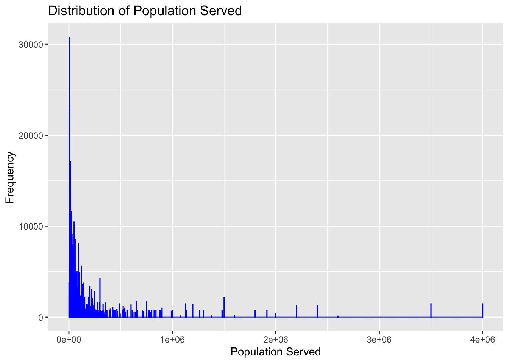
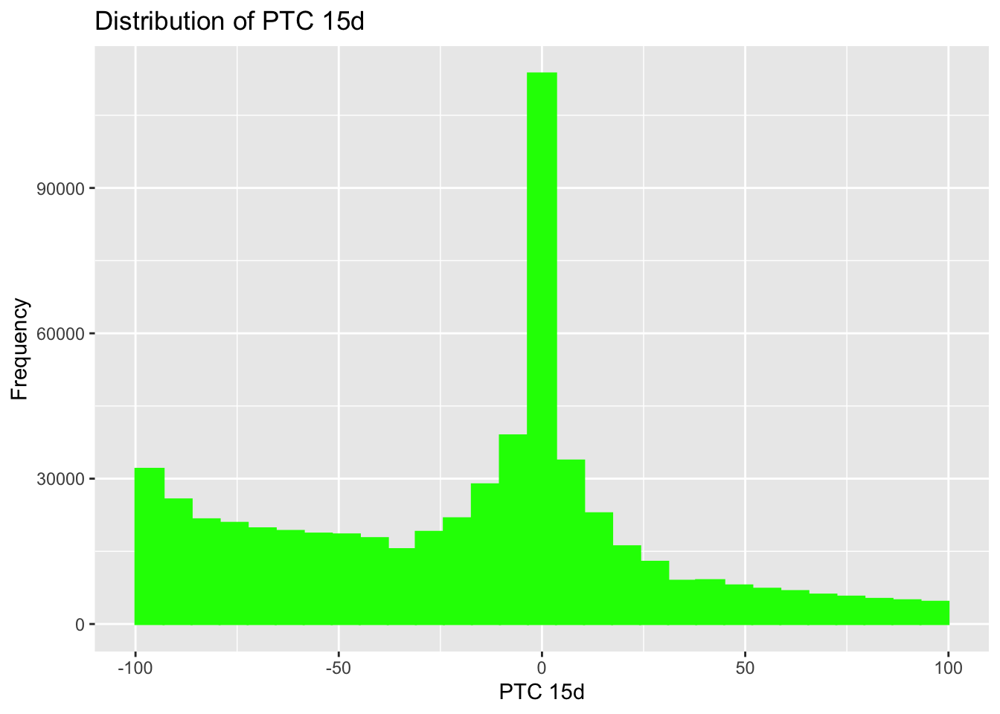
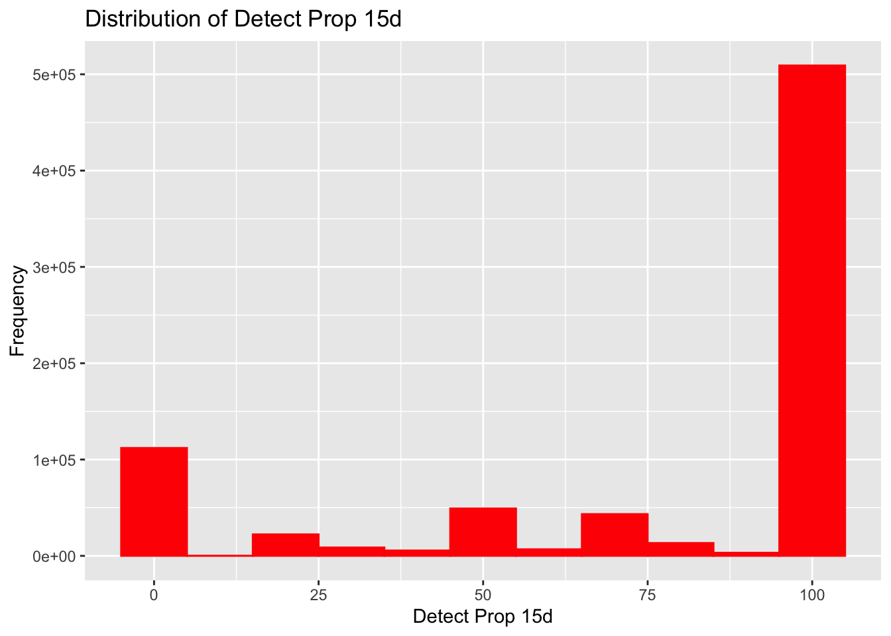

The data that I have chosen for this exercise is the NWSS Public SARS-CoV-2 Wastewater Metric Data from the CDC. The link to the website can be found here. ChatGPT and GitHub Copilot were both used to fine-tune the code below.
#Load required packageslibrary(tidyverse)
── Attaching core tidyverse packages ──────────────────────── tidyverse 2.0.0 ──
✔ dplyr 1.1.4 ✔ readr 2.1.5
✔ forcats 1.0.0 ✔ stringr 1.5.1
✔ ggplot2 3.5.1 ✔ tibble 3.2.1
✔ lubridate 1.9.4 ✔ tidyr 1.3.1
✔ purrr 1.0.2
── Conflicts ────────────────────────────────────────── tidyverse_conflicts() ──
✖ dplyr::filter() masks stats::filter()
✖ dplyr::lag() masks stats::lag()
ℹ Use the conflicted package (<http://conflicted.r-lib.org/>) to force all conflicts to become errors
library(here)
here() starts at /Users/cgnorris/Documents/GitHub/MADA (EPID 8060E)/connornorris-MADA-portfolio
library(ggplot2)library(janitor)
Attaching package: 'janitor'
The following objects are masked from 'package:stats':
chisq.test, fisher.test
This dataset was initially too big to fit within Git’s file size guidelines. To reduce file size, I cut some redundant variables as well as restricted the data to only include observations from 2023 and 2024.
#Code to reduce data to acceptable size for Git#data_path <- here("cdc-data-exercise", "NWSS_Public_SARS-CoV-2_Wastewater_Metric_Data_20250206.csv")#ww <- read_csv(data_path)#ww <- ww %>%#select(!c(key_plot_id, sample_location_specify, reporting_jurisdiction)) %>% #filter(date_start >= as.Date("2023-01-01") & date_start <= as.Date("2024-12-31"))#write.csv(ww, 'wastewater.csv', row.names = FALSE)#Load datasetdata_path <-here("cdc-data-exercise", "wastewater.csv")df <-read_csv(data_path)
Rows: 773779 Columns: 13
── Column specification ────────────────────────────────────────────────────────
Delimiter: ","
chr (5): wwtp_jurisdiction, sample_location, county_names, county_fips, sam...
dbl (5): wwtp_id, population_served, ptc_15d, detect_prop_15d, percentile
date (3): date_start, date_end, first_sample_date
ℹ Use `spec()` to retrieve the full column specification for this data.
ℹ Specify the column types or set `show_col_types = FALSE` to quiet this message.
Rows: 1 Columns: 6
── Column specification ────────────────────────────────────────────────────────
Delimiter: ","
chr (1): Variable
dbl (5): Mean, SD, Min, Max, Median
ℹ Use `spec()` to retrieve the full column specification for this data.
ℹ Specify the column types or set `show_col_types = FALSE` to quiet this message.
Rows: 1 Columns: 6
── Column specification ────────────────────────────────────────────────────────
Delimiter: ","
chr (1): Variable
dbl (5): Mean, SD, Min, Max, Median
ℹ Use `spec()` to retrieve the full column specification for this data.
ℹ Specify the column types or set `show_col_types = FALSE` to quiet this message.
Rows: 1 Columns: 6
── Column specification ────────────────────────────────────────────────────────
Delimiter: ","
chr (1): Variable
dbl (5): Mean, SD, Min, Max, Median
ℹ Use `spec()` to retrieve the full column specification for this data.
ℹ Specify the column types or set `show_col_types = FALSE` to quiet this message.
ptc_15d_summary <-read_csv("ptc_15d_summary.csv")
Rows: 1 Columns: 6
── Column specification ────────────────────────────────────────────────────────
Delimiter: ","
chr (1): Variable
dbl (5): Mean, SD, Min, Max, Median
ℹ Use `spec()` to retrieve the full column specification for this data.
ℹ Specify the column types or set `show_col_types = FALSE` to quiet this message.
Min. 1st Qu. Median Mean 3rd Qu. Max.
-100 -44 0 3101931 75 2147483647
#Plot distributions of continuous variablesggplot(df, aes(x = population_served)) +geom_histogram(binwidth =1000, fill ="blue", color ="blue") +labs(title ="Distribution of Population Served", x ="Population Served", y ="Frequency")

ggplot(df, aes(x = ptc_15d)) +geom_histogram(fill ="green", color ="green") +xlim(-100, 100) +labs(title ="Distribution of PTC 15d", x ="PTC 15d", y ="Frequency")
`stat_bin()` using `bins = 30`. Pick better value with `binwidth`.
Warning: Removed 175282 rows containing non-finite outside the scale range
(`stat_bin()`).
Warning: Removed 1 row containing missing values or values outside the scale range
(`geom_bar()`).

ggplot(df, aes(x = detect_prop_15d)) +geom_histogram(binwidth =10, fill ="red", color ="red") +labs(title ="Distribution of Detect Prop 15d", x ="Detect Prop 15d", y ="Frequency")

ggplot(df, aes(x = percentile)) +geom_histogram(binwidth =5, fill ="purple", color ="purple") +labs(title ="Distribution of Percentile", x ="Percentile", y ="Frequency")